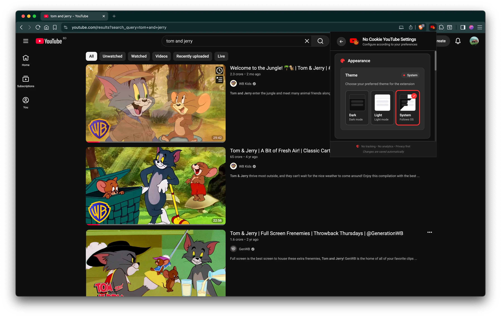

YouTube,
liberated
Watch any YouTube video without cookies, trackers, or ads — in a clean, distraction-free player that respects your privacy.
Works seamlessly with
Everything you need for private viewing
Four distinct playback modes give you full control over how and where you watch — all without a single tracking cookie.
New Tab Player
A distraction-free cinematic player in a new tab. Clean interface, full focus on the video.
In-Tab Redirect
Replaces YouTube entirely with the privacy player. No new windows, no clutter — same tab, safe viewing.
In-Page Overlay
A full-screen overlay with a dimmed backdrop. Dismiss with Escape — video keeps playing.
Floating Player
Draggable, resizable PiP-style player. Stays on top while you browse. Supports multiple simultaneous players.
Privacy Shield
Routes all traffic through youtube-nocookie.com. Tracking cookies are stripped before they reach your browser.
Zero Bloat
No external dependencies, no analytics, no data collection. Smaller pages mean less CPU, less memory, longer battery.
YouTube with vs without No Cookie
YouTube
- Tracking cookies on every page
- Invasive ads and tracking
- Slow page loads
- No floating or overlay modes
- High CPU & battery usage
No Cookie YouTube
- Zero tracking cookies
- Minimal to no ads
- Lightweight fast pages
- 4 playback modes (inc. floating)
- Lower resource usage
Three simple steps to privacy
1. You visit YouTube
Navigate to any YouTube video as usual. The extension activates silently in the background.
2. Shields go up
Your chosen playback mode kicks in. The video is intercepted and routed through youtube-nocookie.com with spoofed headers to prevent embed blocking.
3. Watch freely
Watch ad-free, tracker-free, and cookie-free. No data collection, no profiling — just the video you wanted.
See the experience
Real screenshots of the extension in action across all playback modes and settings.

Extension popup — playback mode & controls

Settings — themes, modes, advanced options

Full-screen overlay on any YouTube page

Draggable PiP player — multiple supported
Install in under a minute
No account needed, no signup, no permissions to grant beyond the browser itself.
Extract
Unzip the downloaded file anywhere on your computer. Keep the folder somewhere permanent.
Extensions Page
Open chrome://extensions in your browser. Toggle Developer mode on (top-right).
Load Extension
Click Load unpacked and select the extracted folder. Done! The icon appears in your toolbar.
Install manually via developer mode, or check back for Chrome Web Store availability.
Download LatestBuilt on trust, not trackers
Zero Data Collection
All settings are stored in your browser's local storage. The extension makes zero network calls beyond the video stream. No analytics. No telemetry. No data leaves your machine.
Fully Open Source
Every line of code is visible on GitHub. Auditable, verifiable, and community-contributable. Licensed under MIT.
Minimal Permissions
Only the permissions it needs: access to YouTube URLs for redirects, and storage for your settings. No browsing history, no social media, no data mining.
Community Supported
Built by developers, for users. Contributions, bug reports, and feature requests are welcome. Join the community on GitHub.
Questions? Answered.
Does this block all ads on YouTube?
The extension primarily removes tracking cookies by serving videos through youtube-nocookie.com. This inherently eliminates many overlay and in-video ads, but it is not a dedicated ad blocker.
Will my YouTube account work?
Yes, but with limited functionality. While the extension is active, YouTube behaves as if you're signed out because account cookies are stripped from requests. Your account isn't actually logged out.
Does this extension collect my data?
No. All settings live in chrome.storage.local — your browser only. The extension makes zero external network calls other than the video stream itself. No analytics, no telemetry, no data collection of any kind. Ever.
Does it work on Firefox or Safari?
The extension is built for Manifest V3 and tested on Chromium-based browsers (Chrome, Edge, Brave, Opera). Firefox support may be added in a future release.
Can I use multiple floating players at once?
Yes! The floating player mode supports stacking multiple players simultaneously. Each video gets its own draggable, resizable floating window.
Why do I see an "Embed Blocked" error?
The extension uses declarativeNetRequest rules to spoof Referer and Origin headers, bypassing YouTube's embed restrictions. If you see this error, try refreshing the page or toggling the extension off and on again.
How do I uninstall the extension?
Go to chrome://extensions, find "No Cookie YouTube", and click Remove. All local settings are deleted and your browser returns to normal YouTube behavior immediately.
Ready to watch freely?
Join users who have taken back their privacy. No signup, no strings attached.
Download